Seven remaining deterministic specs Each section selects that spec's worst failing NVIDIA time. All comparisons keep per-channel MAE8 ≤ 2 and p99 ≤ 8. Crossed inputs and WARP frames are diagnostic controls, never production replacements or owner acceptance. The full CSV contains all four times and every channel.
fx-ov-tr-diamond at 2.1 s fx-cmyk-print at 0.3 s 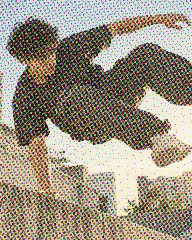
Phone golden NVIDIA shader + NVIDIA SWAY 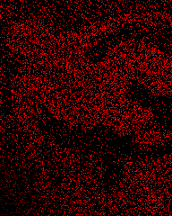
NVIDIA strict heatmap x16 WARP shader + WARP SWAY WARP shader + NVIDIA SWAY: control 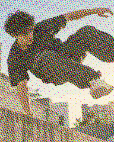
NVIDIA shader + WARP SWAY: control fx-mosaic-pulse at 2.1 s Phone golden NVIDIA shader + NVIDIA SWAY 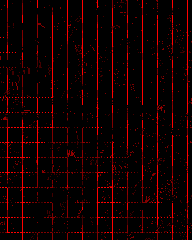
NVIDIA strict heatmap x16 WARP shader + WARP SWAY WARP shader + NVIDIA SWAY: control NVIDIA shader + WARP SWAY: control fx-pb-pixel-creation at 1.5 s 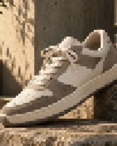
Phone golden NVIDIA shader + NVIDIA SWAY 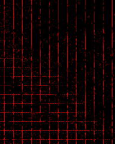
NVIDIA strict heatmap x16 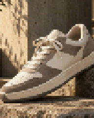
WARP shader + WARP SWAY WARP shader + NVIDIA SWAY: control 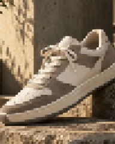
NVIDIA shader + WARP SWAY: control fx-carousel at 0.9 s 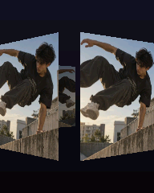
Phone golden 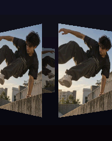
NVIDIA shader + NVIDIA SWAY 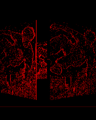
NVIDIA strict heatmap x16 WARP shader + WARP SWAY 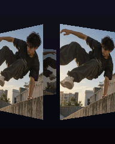
WARP shader + NVIDIA SWAY: control NVIDIA shader + WARP SWAY: control fx-ne-edges at 0.3 s Phone golden NVIDIA shader + NVIDIA SWAY 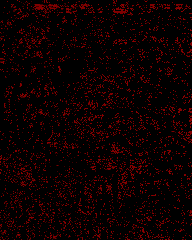
NVIDIA strict heatmap x16 WARP shader + WARP SWAY WARP shader + NVIDIA SWAY: control 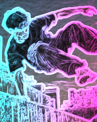
NVIDIA shader + WARP SWAY: control fx-cc-dance-flash at 0.3 s Phone golden NVIDIA shader + NVIDIA SWAY 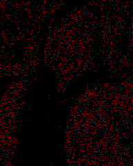
NVIDIA strict heatmap x16 WARP shader + WARP SWAY WARP shader + NVIDIA SWAY: control NVIDIA shader + WARP SWAY: control